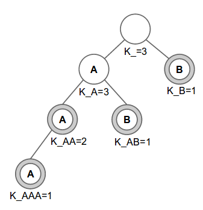

We are given M distinct set of strings S. We want to assign these strings into N servers so that each server has at least one string. Each server then builds a trie from the strings it is assigned to. You are to find string assignments where the total number of nodes in the trie in all the servers is the maximum possible, also need to report the total number of different assignments.
To solve this problem, we first build a trie for the strings in S, then we compute the answers from that trie. To help with our explanation, we will use a different set of strings than the one provided in the problem statement. We use: AA, AB, AAA, B, with N = 3 servers. The corresponding prefixes for our example are “”, “A”, “AA”, “AAA”, “AB”, and “B”. The following figure shows the trie for these strings. Please refer to this tutorial if you are not yet familiar with tries.
The nodes with double circles signify that its prefix is in the set of strings S. For each node p, the prefix of the node is defined as the string formed by concatenating the characters from the root to that node. The value K_p where p is the prefix of the node is explained in the following paragraph.
Before describing K_p, let’s discuss T_p. For a prefix p, let T_p be the number of strings that contain prefix p. In our example, the corresponding values for T_p are: T_=4, T_A=3, T_AA=2, T_AAA=1, T_AB=1 and T_B=1. Let us imagine an optimal assignment where the number of nodes is the maximum possible, we will describe how we compute an optimal assignment in a subsequent paragraph. In the optimal assignment, let us assume that a particular prefix p will appear the maximum number of times allowed (we will discuss this fact later). But the number of times the prefix can appear in an optimal assignment is capped by the number of servers N. In our example, the empty string can potentially appear a maximum of only 3 times instead of 4 (remember T_=4), the reason being that there are only 3 servers it can appear in! To account for this fact where T_p is capped by N, let us define another number K_p. For each prefix p let K_p be min(N, T_p). Therefore, K_p is the maximum number of times a prefix p can appear in any assignment. Going back to our problem, we note that maximizing the number of nodes is essentially equivalent to finding an assignment where each prefix p appears K_p times (if possible), and also to figure out the number of different assignments that have the maximum number of nodes.
To generate an assignment with the maximum total number of nodes across all servers, we will use a greedy method. First, we sort the provided strings lexicographically. In our example, the provided strings are: AA, AB, AAA, B. Sorting it lexicographically will result in the sequence AA, AAA, AB, B. Let’s examine this sorted sequence. From our definition above, prefix p appears as a prefix for T_p strings. We claim that, after sorting the strings the prefix p will be in T_p consecutive strings in sorted order. Referring to our example, if we were to consider the prefix A, it appears in 3 strings which appear consecutively in the sorted sequence. Similarly AA appears as a prefix two times, and trivially the empty string appears four times.
We now describe a greedy strategy to assign the strings to servers. We will assign the sorted string #i to server #i mod N. In our example with three servers, we would have the following assignment: {AA,B}, {AAA}, and {AB}, i.e. the first and fourth strings get assigned to the first server, while the second and third strings get assigned to the second and third servers respectively. If instead we had two servers, we would have the assignment: {AA,AB}, {AAA,B}. We claim that this greedy assignment will give us the optimal assignment maximizing the number of nodes, resulting in each prefix p appearing K_p times on different server. The reason why each prefix p appears K_p times is because of an earlier argument where we pointed out that each prefix p appears in T_p consecutive strings. When assigning strings sequentially to the N servers, this will result in prefix p appearing in min(N, T_p) nodes, which is K_p. Therefore to compute the maximum number of nodes, it is sufficient to find the sum of K_p for all prefix p.
Before proceeding with the explanation, we would like to briefly talk about combinations. We can use Pascal’s triangle to precompute combinations. Each addition and multiplication operations are done modulo 1,000,000,007 (the modulo value is what our problem requires). For the purposes of this editorial, let’s say we precompute and save combinations in Choose(n, k) which chooses ‘k’ elements from ‘n’ elements. By definition, Choose(n, k) where n < k is defined to be zero.
Let us assume we already built the trie for strings S and for each node (with prefix p) in the trie, we already computed K_p (the maximum number of servers that this node with prefix p can be assigned to). We can traverse the trie using post-order traversal and compute the number of ways W_p to distribute the current node’s subtree among K_p servers, we will describe how we compute W_p in subsequent paragraphs. Note that the subtree of node p contains all the strings with prefix p. Since the root (node with prefix p = “”) is the prefix for all strings, we will have the final answer when we finish processing the root node.
Let’s examine the trivial case when we visit the leaf nodes during our traversal. A leaf node represents a whole string. Since we can only put one string in exactly one server, thus K_p = 1 for all leaf nodes p. Also, there is exactly one way to put a single node on a single server, thus W_p = 1 for all leaf nodes p.
Now, let’s examine the case of non-leaf (internal) nodes. After visiting all the children nodes c of node p, we can then compute W_p by using the following information:
To compute W_p for internal nodes p, we first need to compute:
W_p is the product of C1, C2 and C3. C2 is the product of W_c of all the children c of node p because each child can assign its nodes to servers independently.
We can combine the computation for C1 and C3. If the prefix p is one of the strings in S (as in the node labeled K_AA in the figure above), then we can add an artificial leaf child node to node p. After adding an artificial leaf child node, computing C1 also covers computing C3. Note that the computation for C1 does not depend on the children's W_c. To compute C1, we only need the values of K_c. That is, to compute the number of ways to choose which children goes to which of the K_p servers, we only need to know the number of servers each child c is assigned to (i.e. the value K_c). To combine C3 into C1 computation, we can add a artificial child node c with K_c = 1.
We now proceed with the computation for C1. C1 can be computed via dynamic programming. We can store the values of K_c for all the child nodes in a list (including the case for C3, i.e. add K_c=1 for an artificial child) and we want to assign these child nodes into K_p servers such that for each child, no two children is assigned to the same server (since we want to maximize the number of servers used) and all K_p servers are used (i.e. none of the servers are empty). To better illustrate the computation, we explain it in terms of counting colored marbles.
At this point, we can think of the list of K_c as a collection of different colored marbles. Each entry in the list gives us the number of marbles of a particular color. The question is -- how many ways can we distribute these marbles into K bins (i.e. K_p servers) in such a way that each bin contains at least one marble and no bin contains two marbles of the same color? Notice that a bin translates to a server in our problem. Also, note that none of the servers can be empty therefore there should be at least one marble per bin.
The "at least one marble in each bin" condition is tricky, so we start by ignoring it and instead compute the number of distributions that have at most one marble of each color in each bin, but may have empty bins. This will lead to overcounting. Let us first focus on marbles of one color. If we have x marbles of some color, then they must go into x different bins (out of K bins). There are Choose(K, x) combinations to do such distributions. To generalize it to all colors, we multiply Choose(K, x) for each element x in the list. Let’s call this quantity OC_K to denote over counting for K. The quantity OC_K is over counting because when distributing the colored marbles to K servers, some of the servers might be empty. We in fact need to compute OC_i for all ‘i’ between 1 and K, you'll see why we need OC_i in a minute. Computing OC_i is similar to computing OC_K, but instead of K, we use i i.e. we multiply Choose(i, x) for each element x in the list.
We explain this idea of computing OC_i with a few examples. If the list contains {1, 2, 2, 3}, and the number of bins is 4, then OC_4 is Choose(4, 1) * Choose(4, 2) * Choose(4, 2) * Choose(4, 3). Note that if any of the values in the list is greater than number of bins i, then OC_i will be zero, e.g. if we have the same list but the number of bins is 2, then OC_2 is Choose(2, 1) * Choose(2, 2) * Choose(2, 2) * Choose(2, 3) but Choose(2, 3) is zero! Therefore OC_2 is also zero. Intuitively, the reason why it is zero is the following: We are counting the number of ways we can place 3 marbles in 2 bins such that each bin can have at most one marble, but that is impossible! Therefore it is zero.
So now, let’s focus on adding back the "no empty bins" condition. Now that we have OC_i for all values of ‘i’, we have the number of distributions into 'i' bins with some bins being potentially empty. How many distributions are there with no empty bins? Let's call this value Count_i. Note that Count_K is actually the answer we want. First off, we point out that Count_1 = OC_1. Why? The reason is because OC_1 is counting the number of ways we can place all the colored marbles into one server. This means there cannot be any empty servers because there is only one server to begin with! Hence Count_1 = OC_1.
To recap, we know OC_i and we also know Count_1 and we would like to compute Count_K. To do so, let’s look at the problem of computing Count_i. To do so, we will use OC_i. For a second, let us imagine how we would compute OC_i if we knew Count_i. It would be:
OC_i = sum(Count_a * Choose(i, i-a) for a in [1, i])Let us explain this formulation. Remember, OC_i is counting for distributions when some of the bins out of the ‘i’ bins are empty. Let us say there are ‘a’ non-empty bins therefore there are ‘i-a’ empty bins. There are Choose(i, i-a) ways to choose ‘i-a’ empty bins from ‘i’ bins. We will now fill the ‘a’ non-empty bins with marbles, which is actually given by Count_a!
We can switch the LHS and RHS of the above formulation, and rewrite the resulting LHS as follows:
Count_i * Choose(i,0) + sum(Count_a * Choose(i, i-a) for a in [1, i-1]) = OC_i
Note that Choose(i, 0) is 1. Therefore, after rearranging the above formulation, we get:
Count_i = OC_i - sum(Count_a * Choose(i, i-a) for a in [1, i-1])
This way, we can compute Count_i iteratively: first compute Count_2, then Count_3, and so on until we finally compute Count_K. Count_K is the number of ways to distribute the colored list of marbles into K bins in such a way that each bin contains at least one marble and no bin contains two marbles of the same color.
Please refer to rng..58’s implementation which implements the counting idea discussed above.